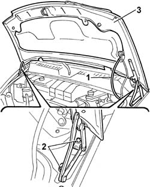

7210E20 R.R. BONNET LID
- Path
- Procedures > 72 PANELS AND FRAME > 7210 REMOVING REFITTING > 7210E EXTERNAL PARTS > 7210E20 R.R. BONNET LID
- Kind
- repair procedure (removal / refitting; the operation number is the code)
- Applies to
- all engines; all production periods
- Interactive page
- https://sloeber94.github.io/elrnDB-fDct/en/#/244001563
Applies to: all engines; all production periods
 Removing
Removing
 Refitting
Refitting1. Disconnect the windscreen washer jet pipe.
2. Undo the bolts fixing the bonnet lid hinges to the bodyshell.
3. Remove the bonnet lid, with the help of a second mechanic, and place it on a surface taking care over the paintwork.

Applies to: all engines; all production periods
Refitting
Removing- Fit the bonnet lid with the help of a second mechanic, taking care not to damage the paintwork.
- Screw in the bolts securing the bonnet lid to the bodyshell without tightening them.
- Connect the windscreen washer jet pipe.
- Loosen the fastenings for the bonnet lock.
- Continue with the alignment of the bonnet, placing the hinge in the correct position, using the slotted openings in the actual hinge.
- Tighten the bolts fixing the bonnet lock to torque.
- At the end of each adjustment, tighten the bonnet lock fastenings.